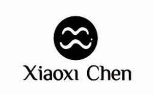

Trade Mark Journal No.2025/027 4 July 2025
UK00004164024 22 February 2025 (8,14,35,36,41,42)

- Class 8
- Silverware.
- Class 14
- Jewellery, including fine jewellery, art jewellery, and conceptual jewellery, made from precious metals, gemstones, and other materials; enamelled jewellery; jewellery namely chains, beads, pendant, locket, necklace, choker, scarf ring, scarf clip, pin, medallion, medal, bracelet, bangle, cuff bracelet, tennis bracelet, armlet/arm cuff, cufflink, glasses, lorgnette chain, money clip, watch, charm, phone chain, tie clip; earrings, studs, hoops, climbers, ear plugs, ear screws, nose pins, barbells, ankle bracelet, piercing jewellery, tiara, hairpin, hair stick, hair vine/chain, headband, hair comb, body ornament; Parts and fittings for jewellery and watches.
- Class 35
- Retail and online retail services in relation to jewellery, tableware, and decorative metal objects; Retail and online retail services connected with the sale of clothing, clothing accessories and fashion accessories.
- Class 36
- Jewellery, watches, silverware, and precious metal-related objects (e.g., coins, medals, boxes, spoons, etc.) appraisal, grading, valuation and certification services, including the assessment of both new and antique jewellery for insurance, sale, or other purposes. Expert services in determining the value of jewellery items, watches, silverware, and precious metal objects, including gemstones, precious metals, and other materials; Organising collections.
- Class 41
- Jewellery design, manufacturing, and gemmology education service, including workshops, courses, conferences, competitions, and events. Offering both online and in-person learning opportunities; Organizing and arranging exhibitions for educational, cultural, entertainment purposes; Jewellery and art gallery and gallery services; Organisation of conferences, exhibitions and competitions.
- Class 42
- Design of silverware and tableware; Gemstones and jewellery authentication and certification services; Design of artwork; Design of prototypes; Fashion design; Design of typefaces; Visual design; Pattern design; Design of furnishings; Design of stationery; Design of interior decoration; Design of models; Jewelry design; Design of products; Design of jewellery; Product design and development; Design consultation; Design of moulds; Graphic illustration design; Design of sculptures; Computer-aided industrial design; Analysis of product design; Industrial and graphic art design; Design of manufacturing methods; Design of fashion accessories; Certification of diamonds; Quality testing of products for certification purposes; Design of clothing accessories.
Ocean Vogue Limited